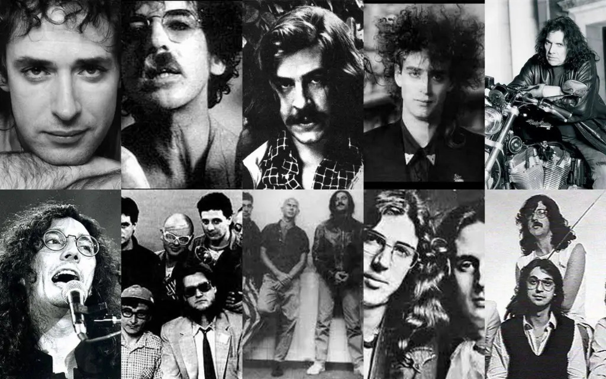
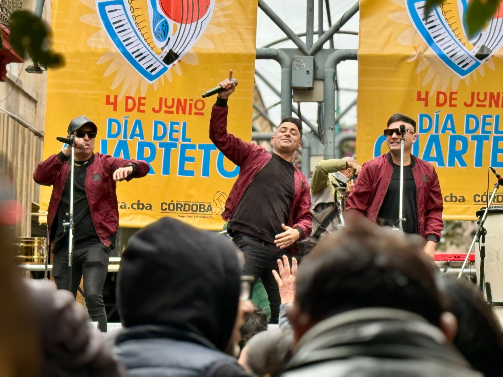
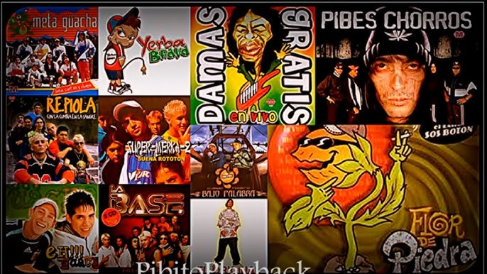

La cultura argentina está profundamente marcada por la mezcla de raíces indígenas, españolas y criollas. Sus costumbres reflejan unión, familia, música y celebraciones regionales que se mantienen vivas hasta hoy. Desde el mate que acompaña cada charla, hasta festivales masivos como la Vendimia o el Carnaval norteño, las tradiciones forman parte del día a día y del orgullo nacional.
El Mate
El mate es un símbolo de amistad y encuentro. Se comparte en casas, escuelas, trabajos y reuniones familiares.
Carnaval Norteño
En Jujuy y Salta se celebra con comparsas, trajes coloridos, música de sikus y la ceremonia del desentierro del Diablo, que simboliza alegría y prosperidad.
Comidas Típicas del País
La gastronomía argentina es reconocida por su mezcla de sabores indígenas, criollos y europeos. Los platos son abundantes, caseros y están ligados a fechas patrias y reuniones familiares.
Empanadas
Cada provincia tiene su estilo: salteñas jugosas, tucumanas con huevo, mendocinas con comino, o criollas cortadas a cuchillo.
Locro Criollo
Plato patrio a base de maíz, zapallo y carne. Se consume especialmente el 25 de mayo y el 9 de julio.
Asado
El asado ritual social y sabor típico en cada reunión.
Dulce de leche
Dulce insignia del país, usado en helados, alfajores, tortas y facturas.
Tortas fritas
Comidas típicamente los días de lluvia, acompañadas de mate.
Vino
El vino argentino se caracteriza por la calidad de sus tintos, siendo el Malbec su cepa más emblemática, con notas a frutos rojos y taninos suaves.
Música y Danzas
La música argentina es diversa y reconocida a nivel mundial. Mezcla tradición, identidad regional e innovación. Del tango porteño al folclore del interior, cada género tiene su historia y sus artistas claves.
Tango
Nacido en Buenos Aires, es un símbolo global del país. Elegante, emocional y pasional. Figuras como Piazzolla y bailarines reconocidos lo llevaron al mundo.
Folklore Argentino
Representa al interior del país. Chacarera, zamba, malambo y chamamé relatan la historia del pueblo. Artistas como Mercedes Sosa y Los Chalchaleros marcaron el género.

Rock Nacional
Movimiento musical histórico en Latinoamérica. Soda Stereo, Charly García, Fito Páez y más construyeron una identidad ligada a rebeldía y poesía urbana.

Cuarteto
Música popular, festiva y presente en todas las celebraciones. El cuarteto cordobés liderado por La Mona Jiménez es un ícono.

Cumbia Villera
Es una cumbia argentina nacida en barrios populares a fines de los 90, con letras que reflejan la vida en las villas y un sonido simple y electrónico.
Deportes en Argentina
El deporte es una de las pasiones más fuertes de la cultura argentina. Además del fútbol, que ocupa un lugar central en la identidad nacional, el país se destaca en diversas disciplinas gracias a la dedicación de sus atletas y al apoyo masivo del público. A lo largo de la historia, Argentina ha conseguido importantes trofeos internacionales, formando leyendas del deporte y dejando una huella profunda en competencias mundiales.
Fútbol
Argentina es una potencia futbolística con tres Mundiales, grandes jugadores como Maradona y Messi, y clubes famosos como River y Boca que representan la fuerte pasión nacional.
Rugby
El rugby argentino creció mucho gracias a Los Pumas, que lograron el tercer puesto en el Mundial 2007, y al trabajo de clubes formadores de grandes jugadores.
Tenis
Argentina es destacada en tenis por figuras como Vilas, Sabatini y Del Potro; ganó la Copa Davis en 2016 y recibe torneos internacionales en Buenos Aires.
Básquet
El básquet argentino es reconocido en el mundo, especialmente por la Generación Dorada, que ganó el oro olímpico en 2004 y mantuvo un nivel competitivo internacional.